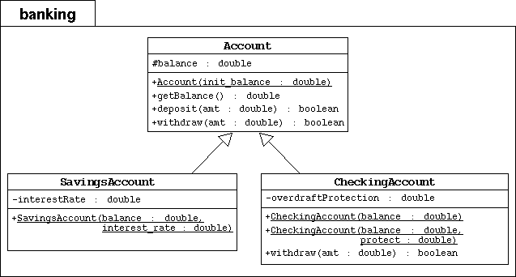

Step5: Banking project-Create Subclasses of Bank Accounts
Objective
In this lab you will create two subclasses of the Account class
in the Banking project: SavingsAccount and CheckingAccount.
You will override the withdraw method for checking accounts and use
super to invoke a parent constructor.
Directions
Start by changing your working directory to /step5 on your computer.
Implementing the Account Subclasses

To the banking package, you will add the SavingsAccount
and CheckingAccount subclasses as modeled by the UML diagram above.
- Create the banking directory. Copy the previous Banking project
files in this package directory.
Modify the Account Class
- In the UML diagram the Account class has changed: The balance
attribute is now protected (indicated by the # character
instead of the - character).
- Change the access mode of the balance attribute to protected.
The Savings Account Subclass
- Implement the SavingsAccount class as modeled in the above
UML diagram.
- The SavingsAccount class must extend the Account class.
- It must include an interestRate attribute with type double.
- It must include a public constructor that takes two parameters:
balance and interest_rate. This constructor must
pass the balance parameter to the parent constructor by calling
super(balance).
The Checking Account Subclass
- Implement the CheckingAccount class as modeled in the above
UML diagram.
- The CheckingAccount class must extend the Account class.
- It must include an overdraftProtection attribute with type double.
- It must include one public constructor that takes one parameter:
balance. This constructor must
pass the balance parameter to the parent constructor by calling
super(balance).
- It must include another public constructor that takes two parameters:
balance and protect. This constructor must
pass the balance parameter to the parent constructor by calling
super(balance) and set the overdraftProtection attribute.
- The CheckingAccount class must override the withdraw
method. It must it perform the following check: if the current balance
is adequate to cover the amount to withdraw, then proceed as
usual. If not and if there is overdraft protection, then
attempt to cover the difference (balance - amount)
by value of the overdraftProtection. If the amount needed
to cover the overdraft is greater than the current level of protection,
then the whole transaction must fail with the checking balance unaffected.
- It must include one public method getOverdraftProtection that return value of the overdraftProtection.
Testing
In the main step5 directory, compile and execute the
TestBanking program. The output should be:
Creating the customer Jane Smith.
Creating her Savings Account with a 500.00 balance and 3% interest.
Creating the customer Owen Bryant.
Creating his Checking Account with a 500.00 balance and no overdraft protection.
Creating the customer Tim Soley.
Creating his Checking Account with a 500.00 balance and 500.00 in overdraft protection.
Creating the customer Maria Soley.
Maria shares her Checking Account with her husband Tim.
Retrieving the customer Jane Smith with her savings account.
Withdraw 150.00: true
Deposit 22.50: true
Withdraw 47.62: true
Withdraw 400.00: false
Customer [Simms, Jane] has a balance of 324.88
Retrieving the customer Owen Bryant with his checking account with no overdraft protection.
Withdraw 150.00: true
Deposit 22.50: true
Withdraw 47.62: true
Withdraw 400.00: false
Customer [Bryant, Owen] has a balance of 324.88
Retrieving the customer Tim Soley with his checking account that has overdraft protection.
Withdraw 150.00: true
Deposit 22.50: true
Withdraw 47.62: true
Withdraw 400.00: true
Now the overdraft protection of checking account is ###.##(print the actual value here)
Customer [Soley, Tim] has a balance of 0.0
Retrieving the customer Maria Soley with her joint checking account with husband Tim.
Deposit 150.00: true
Withdraw 750.00: false
Customer [Soley, Maria] has a balance of 150.0
Notice that Jane's savings account and Owen's checking account fundamentaly
behave as a plain-old bank account. But Tim & Maria's joint checking account
has 500.00 worth of overdraft protection. Tim's transactions dip into that
protection and therefore his ending balance is 0.00. His account's overdraft
protection level is 424.88. Finally, Maria deposits 150.00 into this joint
account; raising the balance from 0.00 to 150.00. Then she tries withdraw
1000.00, which fails because neither the balance nor the overdraft protection
can cover that requested amount.